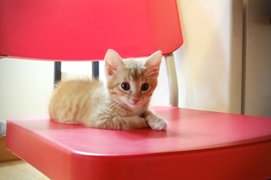

망고가 우리집에 온 지 12일, 워낙 똘똘하고 당돌한 녀석이라 새 집 새 식구 적응은 진작에 마쳤고, 이제 예방접종을 시작해도 될 것 같아 병원에 다녀왔다. 체중을 재보니 940g. 처음 데려왔을 땐 660g이었는데... 망고 너 많이 컸구나. 의사 선생님이 이리저리 살펴보고 손으로도 조물조물 청진까지 마치시더니 몸상태가 굿이라며 칭찬하셨다. 그리고 볼수록 장화신은 고양이 같다며 망고의 미모도 칭찬. 배실배실 흐르는 미소를 감추지 못했던 걸 보면 나도 결국 외모지상주의 속물이었구나. 하지만, 망고의 달달한 미모는 누구라도 거부하기 어렵다. 아아, 망고 이 녀석은... 예쁨 같은 걸 막 끼얹나?
+
예방주사 후유증 따위 너한텐 없는 거니?